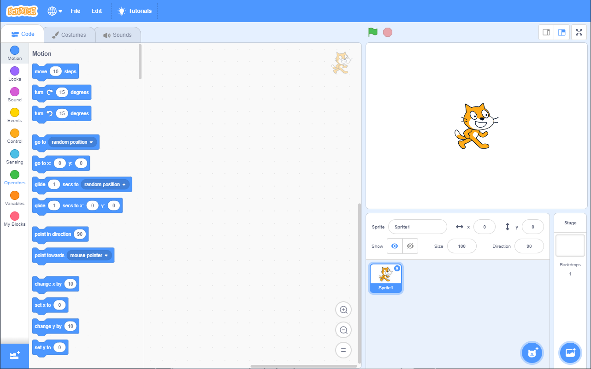
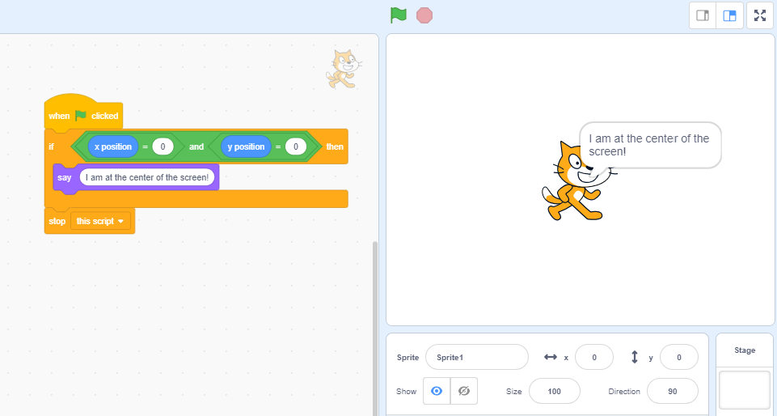
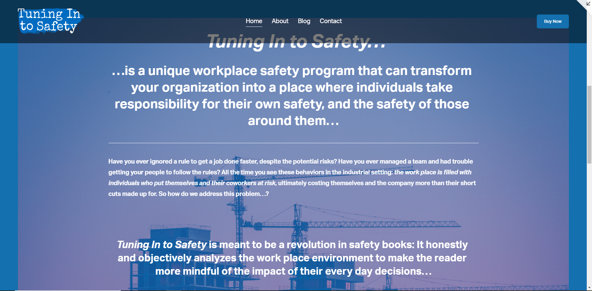

I am a web development student currently living in Phoenix, AZ. I am currently enrolled in the Thinkful engineering
program for web development, and on track to graduate in April of 2021.
My Development Background:
The first time I was introduced to programming was in early high school school, when I was shown a program called
Scratch by my math teacher. This program allowed you to create programs, not
by writing lines of code, but instead by mixing and matching little Lego block snippets of already written code.

I enjoyed designing systems and solving problems, though scratch was admittedly very limited. It was designed targeting kids to teach them the basics of coding, allowing you to make games, animations, songs, whatever you wanted basically.
For years I worked on my bad games and digital experiences, none of which I would describe as successful, or even completed projects, programming systems and making art assets. But I knew that, if I ever wanted to make games for real, I would have to leave Scratch behind eventually. So, after I graduated from high school, I set out to try and learn real programming, from real programmers.
The main reason I wanted to learn programming was so that I could make my own Video Games. Video Games and their design has always been my main passion, probably even since before I was introduced to scratch all those years ago. Games like Mario Kart: Double Dash and Age of Empires 2: Age of Kings inspired me to try and make my own.
My Prior Design Experience and Projects
Though I've only recently learned the basics of CSS and HTML code, having just enrolled into the Thinkful program, I've actually been designing websites on and off for a little under a year now.
A year before I started working on my first website, my dad wrote a book, and he wanted a website to advertise it and to host blogs which expanded on the material. He created this website, with some help from my more tech savvy mother, and it was serviceable, hosting the contact, online ordering and blogging functions, but the overall look left a lot to be desired. So, even though I had no prior experience, he commissioned me to overhaul the look of the site. The main reason he wanted me to do it was because he didn't have the time to do it himself, to learn how and all that.
He designed the his old site using a program called Square Space, and he agreed to pay me an hourly rate to work on it.
I worked on the new site for just under 40 hours, and the both of us were very happy with the results.

It included everything he wanted:
- A page dedicated to hosting his blog posts...
- A page for purchasing the book, including options for bulk purchases and an external link to it's Amazon page...
- A page explaining the book's message and making a sales pitch...
- A page for getting in contact with the author (my dad)...
- And a page for subscribing to email updates.
For whatever reason, he never ended up updating his site to use the new design I created (even though he was very clear about how happy he was with the result). So, unfortunately, you can't actually access it today. I believe he may have given up on the project overall (just speculation though, I don't know for sure). But whatever the reason, the screen shots still remain, and I'm still very proud of the work I did.
This project was so successful in fact, that it made me very passionate for web design and development. And here I am today, enrolled in college, trying to design and develop websites for a living!